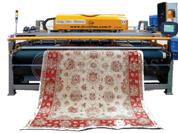

Leke Nedir?
Lekenin tanımı ve halılarda kalıcı iz bırakmasının nedenleri hakkında detaylı bilgi.
Devamını Oku →Halı ve Koltuk Bakımı Hakkında Faydalı Bilgiler

Lekenin tanımı ve halılarda kalıcı iz bırakmasının nedenleri hakkında detaylı bilgi.
Devamını Oku →
Halı yıkamada yapılan en yaygın hatalar ve bunların halıya verdiği zararlar.
Devamını Oku →
Halı türüne göre uygulanan modern ve etkili temizlik yöntemleri.
Devamını Oku →
Havuz sisteminin avantajları ve hijyen açısından dikkat edilmesi gerekenler.
Devamını Oku →
Fason çalışma modeli nedir ve neden kendi tesisine sahip firmalar tercih edilmelidir?
Devamını Oku →Derinlemesine temizlik sürecinin aşamaları ve hijyen garantisi.
Devamını Oku →